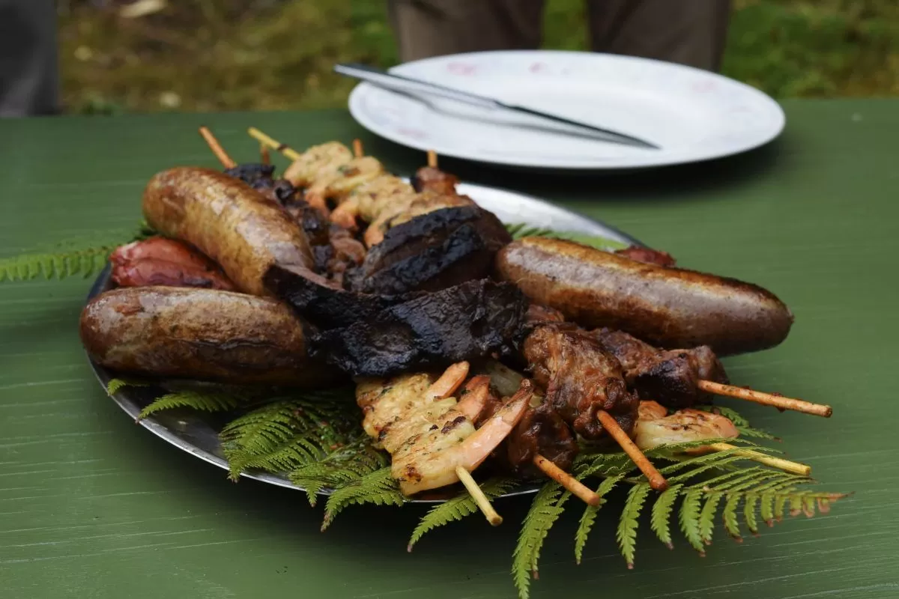

New Zealand's culinary landscape is as diverse as its breathtaking scenery, drawing inspiration from a rich tapestry of cultural influences. Maori cuisine, with its roots deeply embedded in tradition and heritage, plays a significant role in shaping the country's food culture. Traditional Maori ingredients such as kumara (sweet potato), paua (abalone), and rewana bread reflect the indigenous people's connection to the land and sea. Hangi, a traditional Maori cooking method involving earth ovens, imparts a unique smoky flavor to meats and vegetables, showcasing the ingenious culinary techniques passed down through generations. Today, Maori culinary traditions continue to thrive, celebrated in modern interpretations that pay homage to the country's indigenous heritage.
New Zealand's temperate climate and fertile landscapes provide an abundance of fresh produce, contributing to the country's reputation for farm-to-table cuisine. From succulent lamb raised on lush pastures to succulent seafood harvested from pristine coastal waters, New Zealand's culinary offerings are a testament to its commitment to sustainability and quality. Farmers' markets dot the urban and rural landscapes, offering a cornucopia of seasonal fruits, vegetables, artisan cheeses, and organic meats. The farm-to-table movement underscores New Zealand's dedication to preserving its natural resources while promoting healthy, locally sourced ingredients in gastronomic creations that celebrate the essence of Kiwi cuisine.
New Zealand's multicultural society is reflected in its eclectic culinary scene, enriched by a melting pot of international flavors and culinary traditions. Immigrant communities from Asia, Europe, the Pacific Islands, and beyond have infused their culinary heritage into the fabric of Kiwi cuisine, creating a vibrant tapestry of flavors and textures. Thai-inspired green-lipped mussel curry, Pacific Island-style kokoda, and Indian-spiced lamb kebabs are just a few examples of the diverse culinary offerings found in New Zealand. The fusion of global cuisines not only satisfies the palate but also celebrates the country's cultural diversity, fostering a sense of unity and inclusivity in the culinary realm.
For food enthusiasts and epicurean adventurers, New Zealand offers a tantalizing array of gastronomic experiences waiting to be savored. From award-winning wineries in Marlborough and Hawke's Bay to artisanal cheese factories in the Waikato, the country's culinary landscape is ripe for exploration. Food festivals, culinary tours, and farm-to-table dining experiences provide opportunities to indulge in the finest flavors and ingredients that New Zealand has to offer. Whether dining in chic urban eateries or rustic seaside cafes, each bite tells a story of innovation, tradition, and the boundless creativity of New Zealand's culinary artisans.